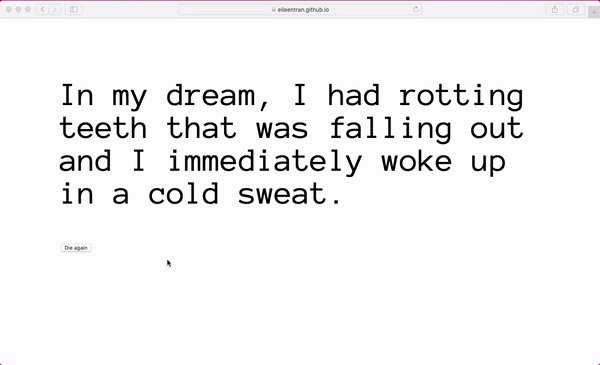
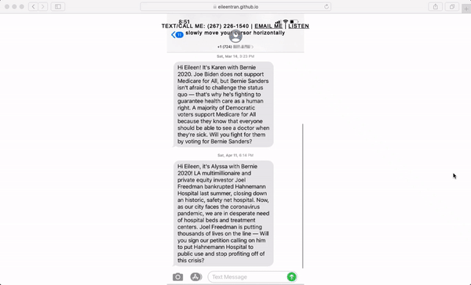

Collection of various websites made using HTML, CSS, and Javascript. Websites explore topics of vulnerability, artificial intelligence, input/output, generative design, change over time, climate change, and hyperlinks as portals.

↑ Bot or Not? : game that uses captchas to test your "humaness"

↑ Umami: reference website to teach others about the background of MSG 
↑ Dream Generator: randomly generates types of dreams that I have 
↑ Collection: archive of my personal messages in 2020

↑ The Talk: a medatative website that gives you a room with the sun so you can reflect on your relationship